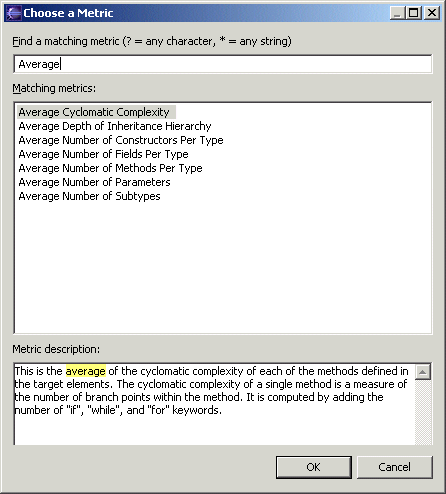
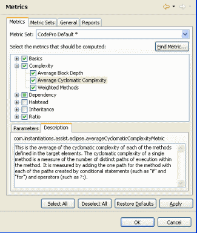
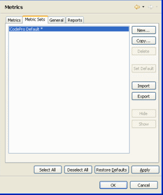
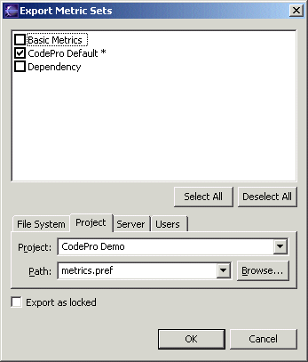
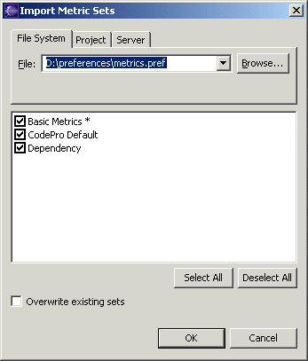
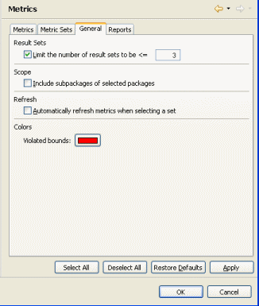
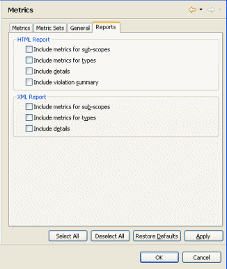

Preferences - Metrics
|
|

The Metrics page displays the selected metric set
along with a list of all of the metrics that are
available. There is always exactly one default metric set denoted
by an asterisk following the name of the metric set, and it is used when
selecting  Compute Metrics in the
CodePro Tools menu. To display the enabled metrics
and their parameters for a particular metric set, select that metric
set in the metric set dropdown list above the list of metrics.
Compute Metrics in the
CodePro Tools menu. To display the enabled metrics
and their parameters for a particular metric set, select that metric
set in the metric set dropdown list above the list of metrics.
The Find Metric button provides a quick way to find various metrics. Entering a keyword in the top entry field will cause any metric with that word in its name or description to be shown in the middle list. Selecting a metric in the list will show its description in the bottom pane. Clicking the OK button will close the dialog and set the selection of the metrics tree to the chosen metric.

Within each metric set, each metric can be individually enabled or disabled by clicking on the check box beside the name of the metric. The Parameters page (shown above) allows you to edit the configuration parameters and bounds of the selected metric. Some metrics may not have any parameters. The Description page (shown below) displays the metric ID and a brief description of what the selected metric will calculate when a metric analysis is performed.

When the menu item  Compute Metrics is selected, the enabled metrics will be computed. The results
will be displayed in the Metrics view.
Compute Metrics is selected, the enabled metrics will be computed. The results
will be displayed in the Metrics view.
The Metric Sets page shows a list of all of the metric sets that are defined. Use the New button to create a new metric set, the Copy button to copy and existing metric set and the Delete button to delete an existing metric set. The Set Default button makes the currently selected metric set into the default metric set. The Hide button hides the selected metric sets from view elsewhere in the product. The Show button restores them.

The Export button is used to export one or more metric sets to an XML-based preference file. At the bottom of the wizard page, is an area for selecting the location to which the preference file should be exported. The first option, "File System" allows the user to export the metric set to any arbitrary location in the file system. It defaults to \preferences\metrics.pref. The second option, "Project", allows the user to store the metric set to a project loaded in their workspace. This makes it easy to put the metric set file under some form of source code control such as CVS, PVCS or ClearCase. The third option, "Server", can be used only if a collaboration server has been specified in the preferences. It allows the user to store the preferences on the collaboration server. The wizard automatically remembers the last path used. The fourth option, "User", allows the user to send preferences to other users without intervention by the receiving user. Thus, this option provides a way to silently set preferences in the workbenches of other users. This can only be done for users and groups led by the user, unless the user is the administrator, in which case it can be done for any user or group. Metric sets may be exported in locked or unlocked format. If a locked metric set is imported, it may not be modified.

The Import button is used to import one or more metrics from an XML-based preference file. At the top of the dialog, is an area for selecting the location from which the metric file should be imported. The first option, "File System" allows the user to import the metrics from any arbitrary location in the file system. It defaults to \preferences\metrics.pref. The second option, "Project", allows the user to load metrics from a project loaded in their workspace. The third option, "Server", can be used only if a collaboration server has been specified in the preferences. This option allows the user to load preferences from the collaboration server. The wizard automatically remembers the last path used.

The General page controls various options concerning the maximum number of metric result sets, whether to include subpackages, the presentation of bounds violations and whether to automatically refresh metrics result sets. The Limit the number of result sets option sets the maximum number of result sets. Each result set consumes memory, so this number should be kept low. Once the maximum is reached, any new ones will eliminate the oldest result set. The Include subpackages of selected packages option controls whether subpackages are included in the analysis. The Violated Bounds option controls the color used to display metrics that violate their bounds. The Automatically refresh metrics when selecting a set option will cause metrics result sets to be refreshed automatically when switching between them.

The Reports page controls various options concerning the
contents of the HTML and XML Metrics reports. The Include metrics for
sub-scopes option
controls whether sub-scope detail information is included in the report. The Include metrics for types option
controls whether type detail information is included in the report. The Include
details option determines whether metric detail information is
included for most metrics. Finally, the Include violation summary
option (HTML-only) controls whether a violation summary section is included at the end
of the report.
|
 |